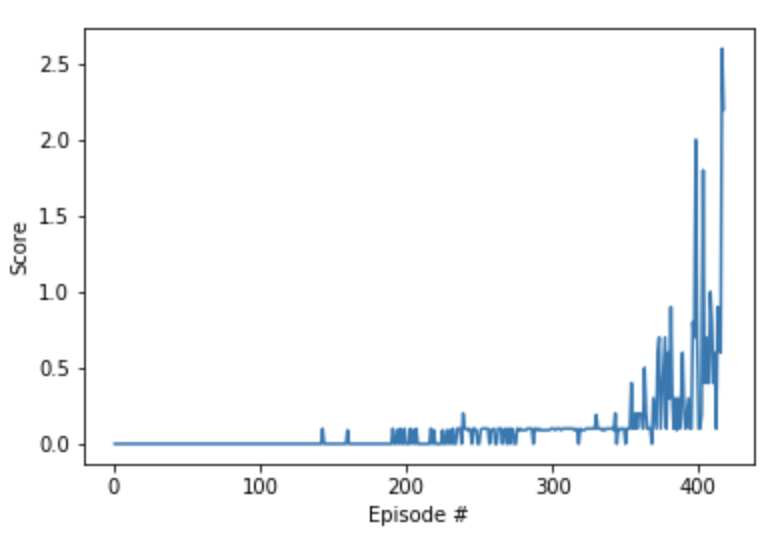

Algorithm and Architecture
The DDPG algorithm on which MADDPG is based, uses an two neural networks. The first network is called the Actor, and is used to map states to actions. The second network is referred to as the Critic, and maps state-action pairs to Q-values. The Actor produces an action given the current state of the environment. The critic then produces TD error signal, which drives learning in both the actor and the critic. This approach allows us to optimize a policy, with a continous action-space, in a deterministic fashion. Target networks for both the Actor and Critic networks are used in order to avoid correlation excessive when calculating the loss factor. The important diffetence with MADDPG is that all agents use a shared Replay Buffer for centralized training and decentralized execution. To achieve our results, we used the following hyper parameters:- BUFFER_SIZE = int(1e6)
- BATCH_SIZE = 512
- GAMMA = 0.99
- TAU = 1e-1
- LR_ACTOR = 1e-3
- LR_CRITIC = 1e-3
- WEIGHT_DECAY = 0
Code
Actor - Critic
Agent
MADDPG
Environment solved in 417 episodes! Average Score: 0.53.
Obstacles & Future improvements
The next step would be to try implementing D4PG as well as a more distributed version, with parallel training. We would also like to attempt a similar approach in trying to solve an environment with even more agents.
References
- A link to the original paper on MADDPG can be found here.